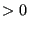
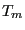
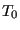

Next: *PRE-TENSION SECTION Up: Input deck format Previous: *PHYSICAL CONSTANTS Contents
Keyword type: model definition, material
This option is used to define the plastic properties of an incrementally plastic material. There is one optional parameter HARDENING. Default is HARDENING=ISOTROPIC, other values are HARDENING=KINEMATIC for kinematic hardening, HARDENING=COMBINED for combined isotropic and kinematic hardening HARDENING=USER for user defined hardening curves and HARDENING=JOHNSON COOK for Johnson-Cook hardening [43], cf. Section 6.8.10. All constants may be temperature dependent. The card should be preceded by a *ELASTIC card within the same material definition, defining the elastic properties of the material. User defined hardening curves should be defined in the user subroutine uhardening.f
For Johnson-Cook hardening the temperature dependence is included in the model equations. However, it may be deactivated by setting the transition temperature equal to the melt temperature. For Johnson-Cook hardening the material must be isotropic and a *RATE DEPENDENT card must be used to define the rate dependence of the hardening curve.
For all other hardening types different rules apply. If the elastic data is isotropic, the large strain viscoplastic theory treated in [92] and [93] is applied if the NLGEOM parameter is active on the *STEP card, else the linear theory from Section 6.8.9 is used. If the elastic data is orthotropic, the infinitesimal strain model discussed in Section 6.8.16 is used. Accordingly, for an elastically orthotropic material the hardening can be at most linear. Furthermore, if the temperature data points for the hardening curves do not correspond to the *ELASTIC temperature data points, they are interpolated at the latter points. Accordingly, for an elastically orthotropic material, it is advisable to define the hardening curves at the same temperatures as the elastic data.
For the selection of plastic output variables the reader is referred to Section 6.8.8.
First line:
Following sets of lines define the isotropic hardening curve for HARDENING=ISOTROPIC and the kinematic hardening curve for HARDENING=KINEMATIC or HARDENING=COMBINED: First line in the first set:
Use as many sets as needed to define complete temperature dependence.
For the definition of the isotropic hardening curve for HARDENING=COMBINED the keyword *CYCLIC HARDENING is used.
For Johnson-Cook hardening the model constants are to be entered in the following order:

).
(melt temperature).
(transition temperature).
Example: *PLASTIC 800.,0.,273. 900.,0.05,273. 1000.,0.15,273. 700.,0.,873. 750.,0.04,873. 800.,0.13,873.
defines two stress-strain curves: one for temperature T=273. and one for T=873. The curve at T=273 connects the points (800.,0.), (900.,0.05) and (1000.,0.15), the curve at T=873 connects (700.,0.), (750.,0.04) and (800.,0.13). Notice that the first point on the curves represents first yielding and must give the Von Mises stress for a zero equivalent plastic strain.
Example files: beampd, beampiso, beampkin, beampt.